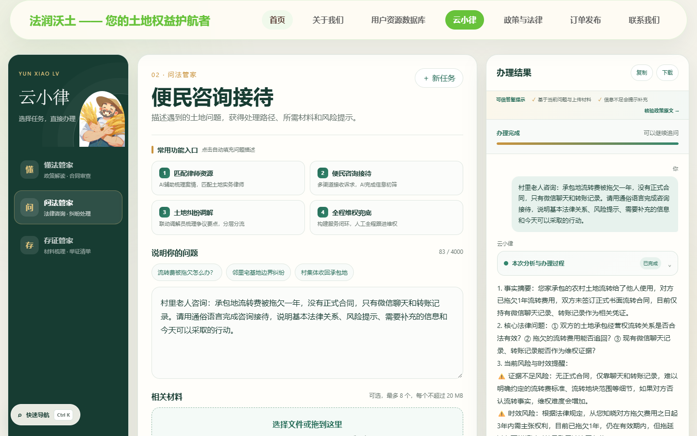
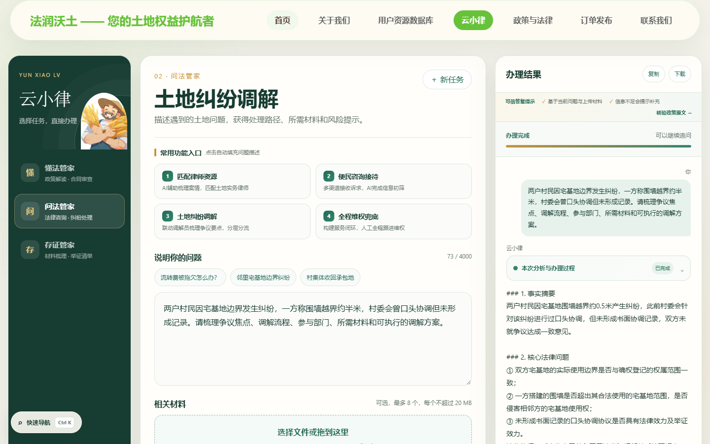
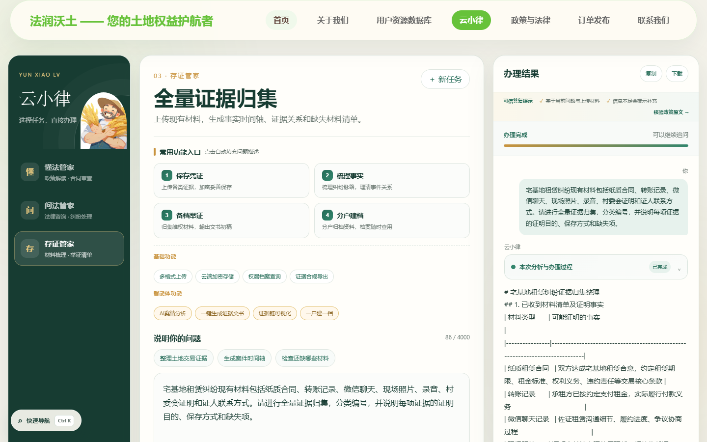
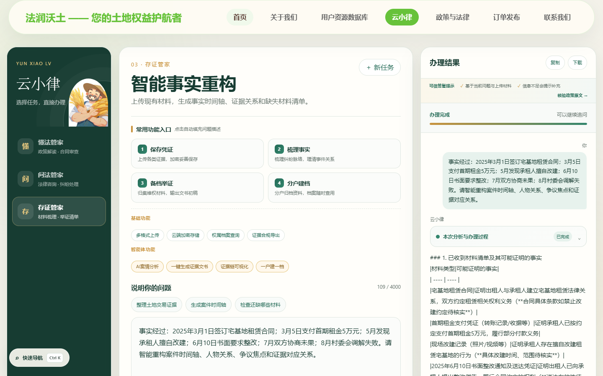
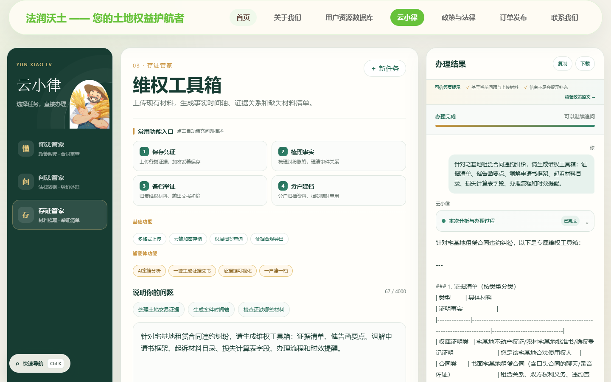

PROJECT ARCHIVE / 01AI × 法律 × 产品
从一个专业议题，到一个可使用的界面。法润沃土· 云小律
围绕土地权益保护，把专业知识组织为政策解读、纠纷咨询与证据整理的具体入口。
实践方向法律场景下的 AI 应用
我的职责项目网站与专业智能体搭建
团队成果3 项 AI 专利成果
让专业能力，
抵达具体的问题。
项目围绕土地权益相关的法律问题设计服务流程。云小律将政策解读、合同审查、纠纷处理与材料整理等任务组织在同一工作台中，使用户能够从自己的问题出发，找到对应的办理入口。





